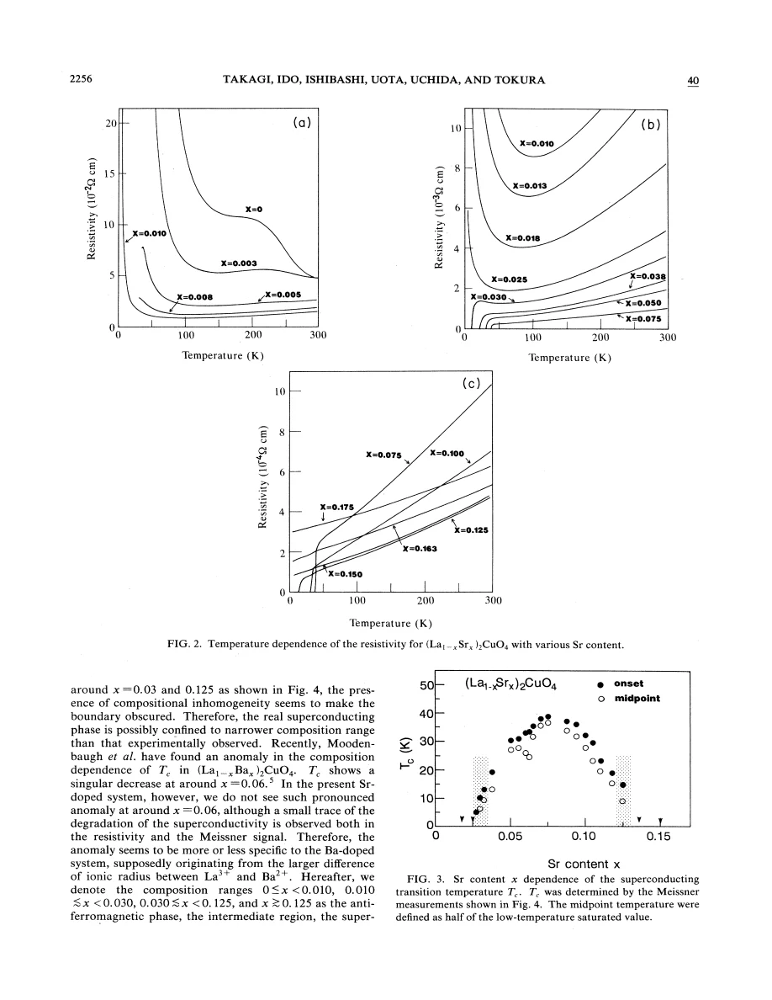
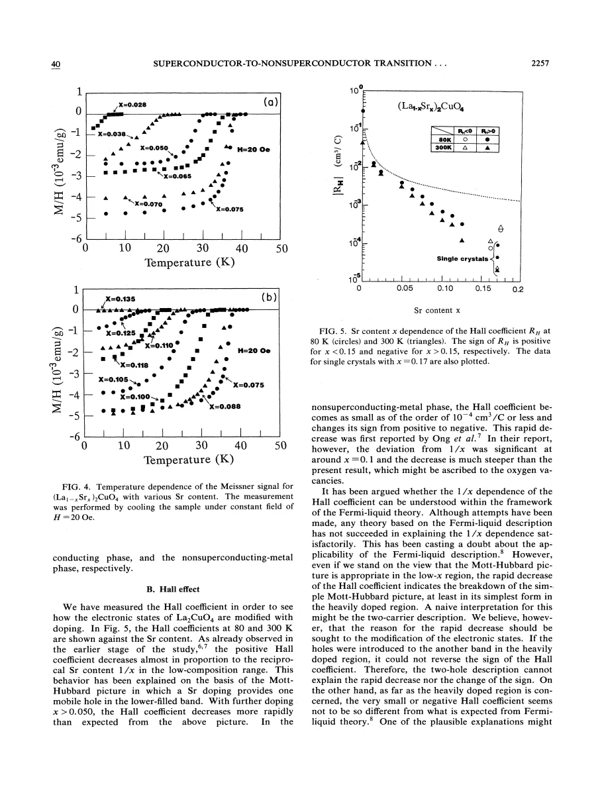
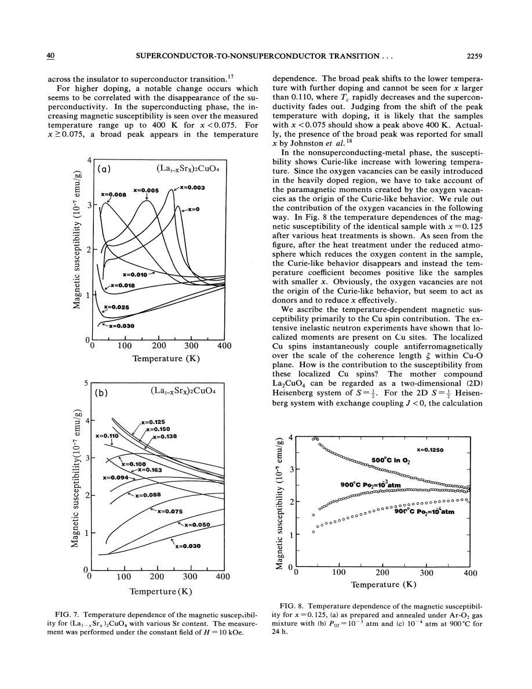

experiment · Takagi · supplied source 1989
Superconductor-to-nonsuperconductor transition in (La1−xSrx)2CuO4 as investigated by transport and magnetic measurements
Hall and susceptibility changes accompany the historical superconducting-to-metal crossover; the paper’s Sr variable is half the usual LSCO x.
The question: How do charge transport and spin response change as oxygen-controlled LSCO crosses its superconducting composition range?
Before you start: the few terms you need
- Composition convention: source x is half conventional LSCO Sr content z = 2x
- Hall coefficient: transverse electrical response sensitive to Fermi surface and scattering
- Uniform susceptibility: bulk response to an applied magnetic field
See → explain → test
Understand it in four pictures.
Picture 1 / 4
Convert the composition first
Look for: The formula has two La/Sr sites each carrying a fraction x of Sr.
Swipe across the picture to read every label, or enlarge it below.
- (La1−xSrx)2CuO4
- Two Sr fractions per formula
- La2−zSrzCuO4: z = 2x
Teaching schematic. This conversion is essential before comparing with papers using conventional x.
Its optimum x = 0.075 means conventional LSCO doping z = 0.15.
Picture 2 / 4
Track several responses
Look for: Resistivity, Hall coefficient and magnetic susceptibility are measured across the same chemical series.
Swipe across the picture to read every label, or enlarge it below.
- Resistivity
- Hall coefficient
- Susceptibility
Teaching schematic. No assumed single-carrier count or unique spin mechanism is drawn.
Metallicity, Hall response and superconductivity are distinct observations.
Check the original: PDF p. 2 · PDF p. 4 · PDF p. 5 · PDF p. 6
Picture 3 / 4
Change oxygen on one composition
Look for: Reduction changes the Curie-like susceptibility toward lower-doping behavior.
Swipe across the picture to read every label, or enlarge it below.
- Same Sr composition
- Reduce oxygen
- Alter effective holes
- Compare spin response
Teaching schematic. The reduction control can also change disorder.
Oxygen vacancies alter effective doping; they are not just independent moment sources.
Check the original: PDF p. 6
Picture 4 / 4
Keep correlation distinct from cause
Look for: Both transport and spin trends change beyond the superconducting range.
Swipe across the picture to read every label, or enlarge it below.
- Hall and spin trends change
- Electronic crossover proposal
- Pairing mechanism unresolved
Teaching schematic. Historical 1989 argument; boundaries are sample and convention dependent.
A proposed Mott-to-Fermi-liquid crossover is an interpretation, not a uniquely identified transition.
Predict before revealing
The source labels its optimal specimen x = 0.075. What is its conventional La2−zSrzCuO4 composition?
Choose an answer, then compare the reasoning.
There are two La/Sr sites, each with Sr fraction x, so z = 2x.
Read the answer
z = 0.15 There are two La/Sr sites, each with Sr fraction x, so z = 2x.
Go deeper Follow the full argument
Start with the unusual chemical notation
Takagi and colleagues use (La1−xSrx)2CuO4, rather than La2−xSrxCuO4. Their x counts the Sr fraction on each of two La/Sr sites, so conventional doping z = 2x. Their maximum Tc near x = 0.075 is z = 0.15, and their measurements through x = 0.175 reach z = 0.35. Without this conversion, the paper would appear to place optimal superconductivity at half its actual Sr content. The authors study about 30 compositions with resistivity, Hall and SQUID measurements, emphasizing the high-doping nonsuperconducting metal. The supplied source is a historical 1989 study; its phase boundaries and mechanistic interpretation remain attached to its specimens and conventions.
Preparation controls and the resistive evolution
Spray drying creates a homogeneous acetate mixture before ceramic synthesis. Oxygen annealing, iodometric titration and systematic lattice parameters support near-stoichiometric oxygen content within the reported resolution. High-pressure oxygen comparisons were also made for heavily doped specimens. Very small Sr additions sharply lower resistivity, and high-temperature metallic slopes appear well before bulk superconductivity. At low doping, a low-temperature upturn and hopping-like behavior signal localization. Superconductivity appears near source x = 0.03, peaks near 0.075, and is absent down to 1.8 K above roughly 0.13 in this series. Those correspond to conventional z approximately 0.06, 0.15 and 0.26. Metallic conduction continues when superconductivity is lost, demonstrating that supplying mobile charge alone is insufficient for pairing.
The Hall result is not just a carrier counter
At low Sr content the positive Hall coefficient decreases approximately as the inverse doping. With more doping it falls faster than that simple trend, becomes very small and eventually changes sign in the heavily doped metal. A nominal hole dopant can therefore coexist with negative Hall response. The paper checks a heavily doped single crystal with in-plane current and field perpendicular to the layers, finding qualitatively similar behavior to the ceramic result and reducing concern about an orientation-averaging artifact. Hall transport depends on Fermi-surface curvature, mobilities and scattering, so 1/(eRH) cannot automatically be read as the chemical hole density. The source proposes a crossover from a simple doped-Mott picture toward a Fermi-liquid-like electronic state; its Hall data do not uniquely establish that microscopic account.
Temperature dependence and the spin comparison
In the superconducting compositions the Hall coefficient increases upon cooling despite metallic resistivity; at source x = 0.075 it roughly doubles between 300 and 50 K. The source discusses skew scattering and multiple transport channels without selecting a settled origin. Susceptibility provides an independent change: long-range antiferromagnetic order is rapidly suppressed at small x, but a susceptibility increasing with warming persists, interpreted as two-dimensional antiferromagnetic correlations. A broad maximum shifts to lower temperatures with doping and disappears from the accessible window in the heavily doped region, where a Curie-like upturn dominates. The trend need not mean the short-distance exchange J vanishes; different magnetic scales and contributions can change differently.
The oxygen control and the limits of the interpretation
A source x = 0.125 specimen is measured after different oxygen heat treatments. Reducing oxygen suppresses the Curie-like behavior and restores a positive temperature slope resembling lower Sr doping. The authors use this to argue that a simple vacancy-induced paramagnetic-moment explanation is inadequate and that vacancies act as donors, lowering effective holes. This is useful evidence, although reduction also changes disorder and does not isolate every microscopic effect. A two-dimensional spin model motivates a susceptibility maximum near kBT ≈ 0.95J; applying that undoped model to doped carriers is explicitly tentative. Charge and spin changes occur together as superconductivity disappears, favoring a magnetic interpretation in the authors’ discussion without proving a pairing mechanism. Compare both this electronic argument and the later structural-boundary paper as distinct historical hypotheses.
How to compare the evidence
Use the composition conversion before placing any point from this paper on a modern LSCO diagram. The source formula contains two La/Sr sites, so its x = 0.125 oxygen-control specimen corresponds to conventional Sr content z = 0.25, not z = 0.125. The same warning applies to Hall-sign and superconducting-boundary comparisons. Next keep composition separate from transport inference: a negative Hall coefficient in a hole-substituted oxide does not imply the chemical Sr count became negative. Fermi-surface curvature and scattering can change the transverse response. Finally, varying oxygen at fixed Sr content changes effective carrier donation and can change disorder. The experiment is therefore a useful control against a simple vacancy-moment explanation, rather than an isolated test holding every electronic variable fixed.
Translate the mathematics Key equations and symbol meanings
z = 2x; (La1−xSrx)2CuO4 = La2−zSrzCuO4
Symbols: x: Sr fraction per La/Sr site in this paper; z: conventional Sr content per formula unit.
Every source composition must be doubled for comparison with the usual LSCO notation.
RH ≈ 1/(ne) only in a simple one-carrier limit
Symbols: RH: Hall coefficient; n: carrier density; e: positive elementary charge.
The source’s sign change and nontrivial temperature dependence show why this limit is not an automatic doping calibration.
kBTmax ≈ 0.95J for the undoped 2D S = 1/2 model
Symbols: Tmax: uniform susceptibility maximum; J: exchange energy; kB: Boltzmann constant.
The source uses this parent-spin benchmark qualitatively; doped susceptibility contains additional physics.
Read the evidence A guided look at the original figures

Open the full original page ↗

Open the full original page ↗

Open the full original page ↗
What this paper does—and does not—establish
- All source x values use the per-site convention; z = 2x is stated throughout.
- Oxygen stoichiometry is controlled within finite experimental resolution.
- The proposed electronic crossover and spin-based pairing interpretation are not unique deductions.
Explain it back.
Try answering aloud before opening the explanation.
Does negative RH prove Sr adds electrons chemically?
No. The transport sign can change with Fermi-surface and scattering structure despite hole substitution.
Can a metal fail to superconduct?
Yes. The heavily doped samples remain metallic after their superconducting transition disappears.
Does oxygen reduction only add magnetic defects?
No. It also changes effective hole count and disorder, as the susceptibility control illustrates.
Connect the next paper.
Source version, reading coverage and preservation
Complete supplied substantive text read; selected main figure and equation pages rendered and visually checked
Reviewed body pages: 1, 2, 3, 4, 5, 6, 7. References checked as a bibliography but cited works were not independently re-read.
Original file retained byte for byte. SHA-256: fbe89a4854b0d1ba695f23671f405bf7ae07f9000fb7e8ad04572e76c1786a91
Filename: PRB - Takagi - Superconductor-to-metal transition in LSCO - 1989.pdf.